문 안 열리면
전화 주세요
현관문 개문 · 출장 열쇠 · 도어락 설치, 교체, 수리
서울, 경기 어디든 24시간 갑니다.
- 못 열면 돈 안 받습니다
- 비용은 작업 전에 먼저 말씀드립니다
- 도어락 일만 30년 했습니다
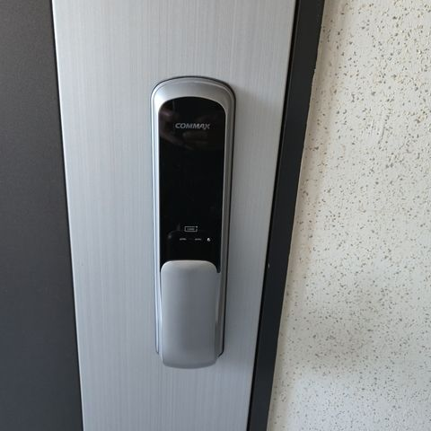
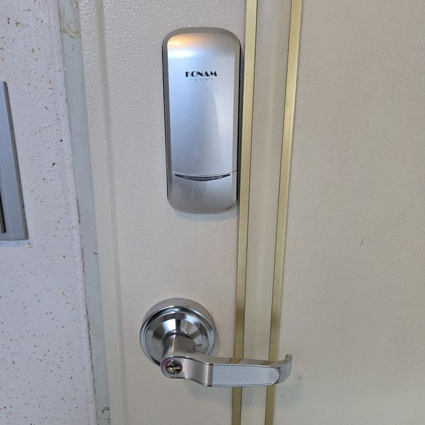
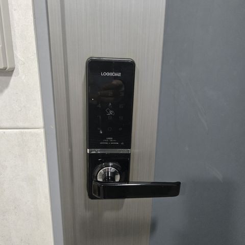
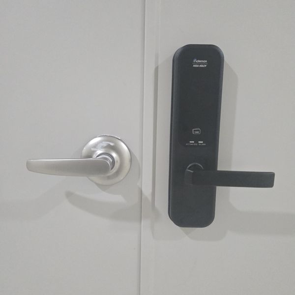
이런 일 합니다
눌러 보시면 자세히 적어 뒀습니다.
전화 주시면 이렇게 합니다
비용은 꼭 작업 전에 말씀드립니다.
- 1전화어디인지, 어떤 상황인지
- 2확인문 종류와 증상을 여쭤봅니다
- 3출동도착 전에 전화드립니다
- 4비용 안내작업 전에 먼저 말씀드립니다
- 5작업끝나고 잘 되는지 같이 봅니다
직접 달고 고친 도어락
전부 현장에서 찍은 사진입니다.
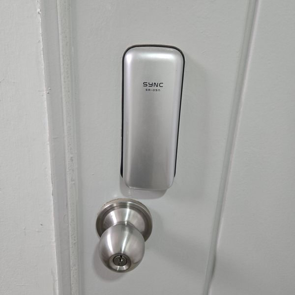
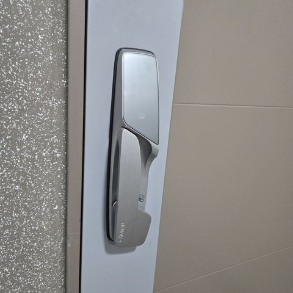
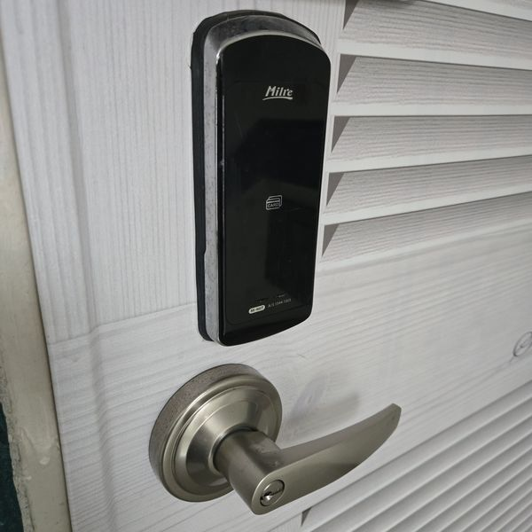
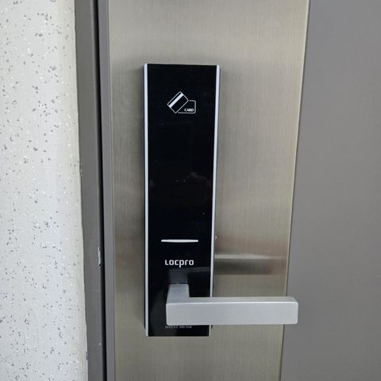
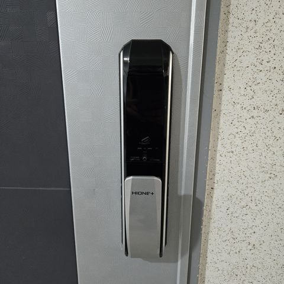
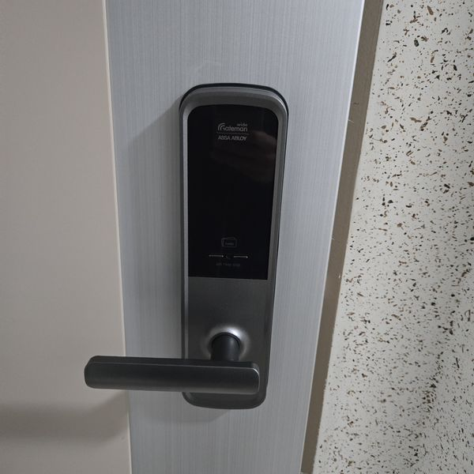
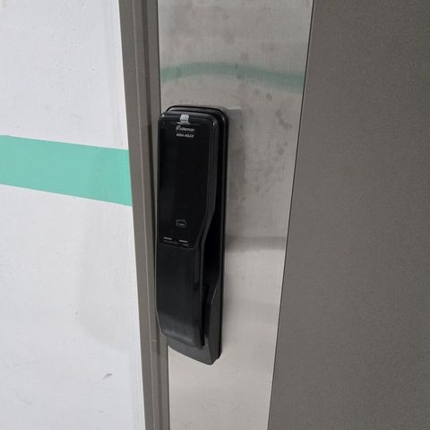
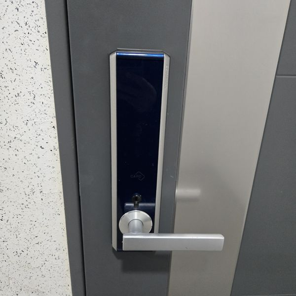
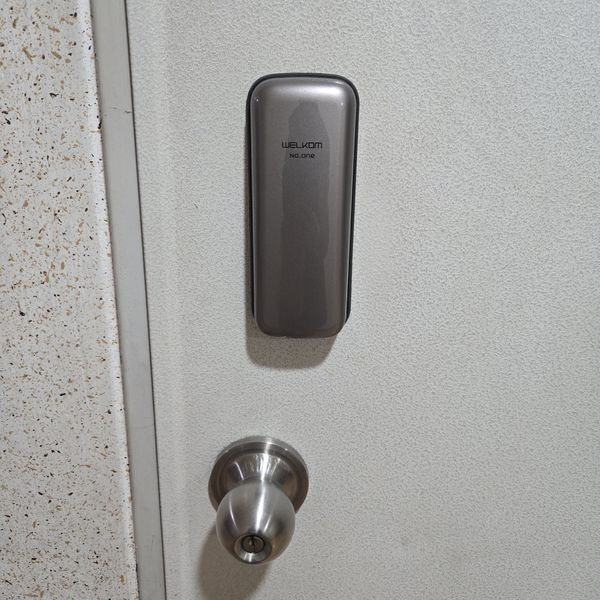
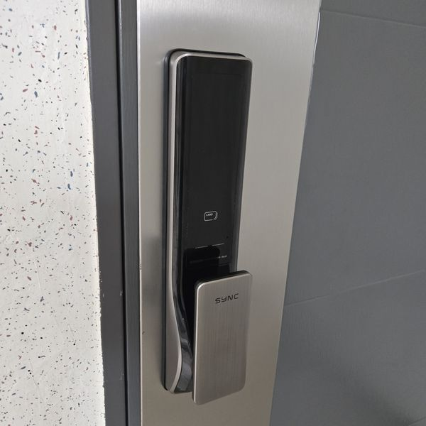
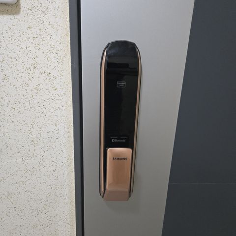
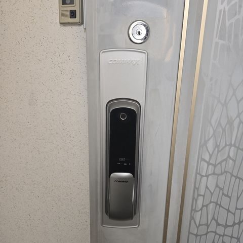
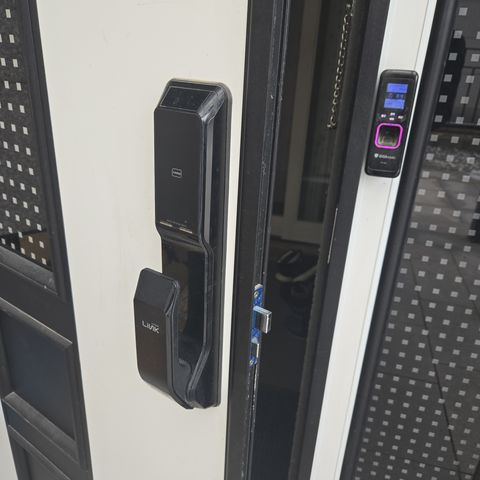
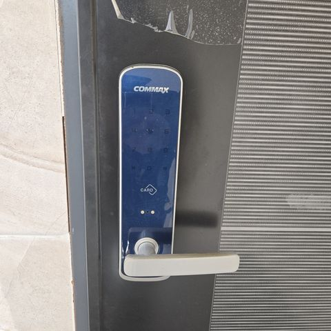
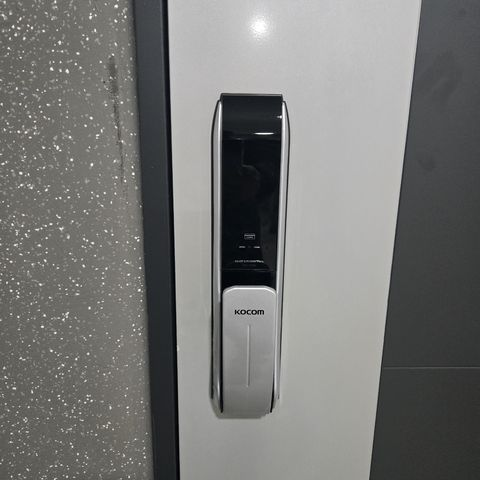
출장 지역
서울, 경기 전 지역 갑니다. 지역을 누르면 다니는 동네가 나옵니다.
경기 31개 시·군
서울 25개 구
지역을 누르면 그 지역에서 다니는 동네가 나옵니다.
많이 물어보시는 것
문 못 열면 돈 내야 하나요?
안 받습니다. 그리고 작업 전에 얼마인지 먼저 말씀드리고, 괜찮다고 하시면 시작합니다.
새벽에도 오시나요?
24시간 받습니다. 시간 상관없이 전화 주세요.
어디까지 오시나요?
서울 25개 구, 경기 31개 시·군 다 갑니다. 지역별 페이지에 다니는 동네를 적어 뒀습니다.
문이나 도어락이 망가지진 않나요?
덜 상하는 방법부터 해봅니다. 부품을 바꿔야 할 때는 미리 말씀드립니다.
집주인 아니어도 열어주나요?
사시는 분이 맞는지 신분증이나 우편물로 확인하고 엽니다.
고장 나면 무조건 바꿔야 하나요?
아닙니다. 고쳐서 될 것 같으면 수리를 먼저 말씀드립니다.